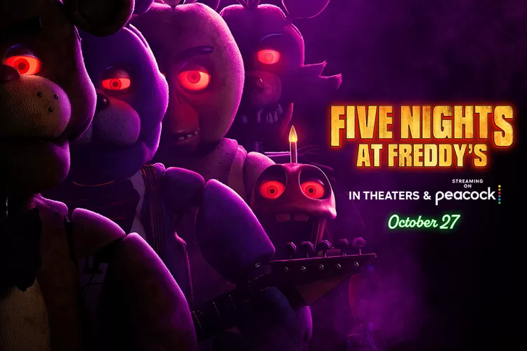
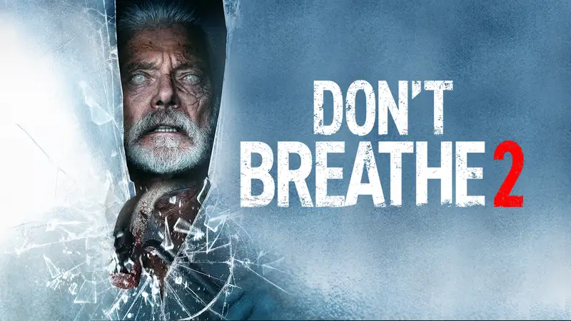

Most Popular in The Town!

Five Nights at Freddy's
A troubled security guard begins working at Freddy Fazbear's Pizza. During his first night on the job, he realizes that the night shift won't be so easy to get through. Pretty soon he will unveil what actually happened at Freddy's.
See details

Don't Breathe 2
The sequel is set in the years following the initial deadly home invasion, where Norman Nordstrom lives in quiet solace until his past sins catch up to him.
See details